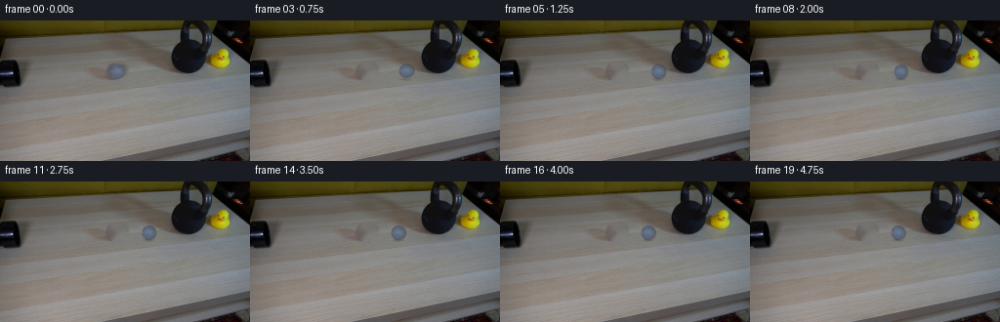
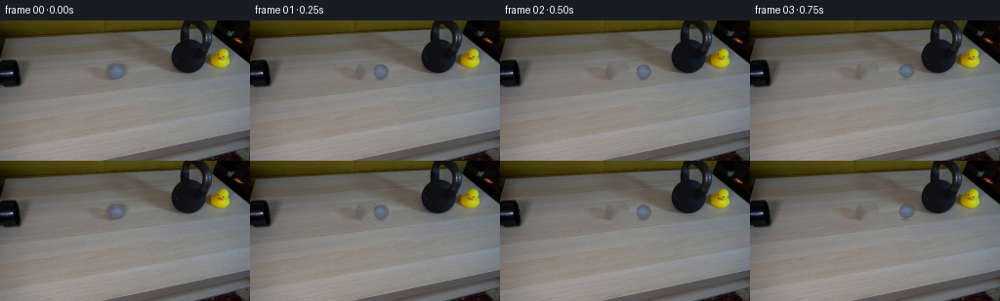
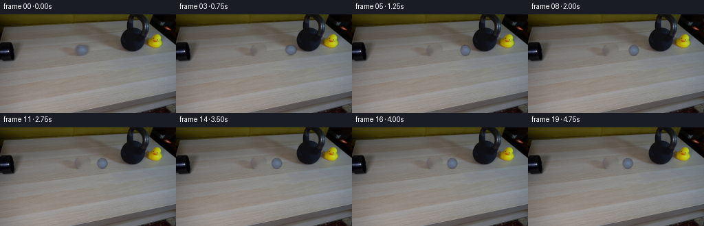
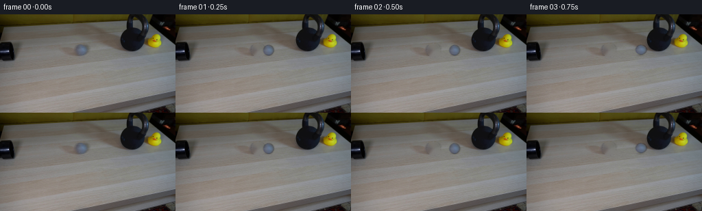

CODING AGENTS AS PIXEL WORLD MODELS
traex/DeepSeek-V4.1-Flash · 0196
点击播放 · 原生 RGB 像素
逐轮保存的候选
回放视频、检查图与代码变化。
每份候选均可单独播放。实际图片检查记录在下方工具轨迹中。
候选 01播放与检查图
点击播放 · 原生 RGB 像素
展开代码变化
--- 上一保存版本
+++ 本次保存版本
@@ -0,0 +1,147 @@
+from pathlib import Path
+
+import cv2
+import numpy as np
+from PIL import Image
+
+import artifact_io
+
+
+ROOT = Path(__file__).resolve().parent
+WIDTH, HEIGHT, FRAME_COUNT = 256, 144, 20
+
+
+def smoothstep(edge0, edge1, value):
+ x = np.clip((value - edge0) / (edge1 - edge0), 0.0, 1.0)
+ return x * x * (3.0 - 2.0 * x)
+
+
+def make_ball_sprite(frame, clean_plate):
+ """Recover the grey ball from frame 00 and give it a soft alpha edge."""
+ cx, cy = 120.4, 52.1
+ radius = 7.7
+ pad = 11
+ x0, x1 = int(cx) - pad, int(cx) + pad + 1
+ y0, y1 = int(cy) - pad, int(cy) + pad + 1
+ source = frame[y0:y1, x0:x1].astype(np.float32)
+ plate = clean_plate[y0:y1, x0:x1].astype(np.float32)
+
+ yy, xx = np.mgrid[y0:y1, x0:x1]
+ dist = np.sqrt((xx - cx) ** 2 + (yy - cy) ** 2)
+ alpha = 1.0 - smoothstep(radius - 1.25, radius + 0.15, dist)
+
+ # Undo the original table contribution at the feathered rim.
+ safe_alpha = np.maximum(alpha, 0.12)[..., None]
+ ball = (source - plate * (1.0 - alpha[..., None])) / safe_alpha
+ ball = np.clip(ball, 0.0, 255.0)
+
+ # Keep the recovered interior, but suppress any residual table grain.
+ interior = smoothstep(radius - 2.4, radius - 0.8, dist)[..., None]
+ softened = cv2.GaussianBlur(ball, (3, 3), 0.55)
+ ball = ball * (1.0 - 0.28 * interior) + softened * (0.28 * interior)
+ return ball.astype(np.float32), alpha.astype(np.float32)
+
+
+def make_shadow_sprite():
+ size = 25
+ yy, xx = np.mgrid[:size, :size].astype(np.float32)
+ cx = cy = (size - 1) * 0.5
+ ellipse = ((xx - cx) / 8.6) ** 2 + ((yy - cy) / 2.15) ** 2
+ alpha = np.exp(-2.2 * ellipse)
+ alpha *= smoothstep(1.0, 0.35, ellipse)
+ return alpha.astype(np.float32)
+
+
+def composite_sprite(canvas, sprite, alpha, center, opacity=1.0, scale=(1.0, 1.0)):
+ h, w = sprite.shape[:2]
+ center = np.array(center, dtype=np.float32)
+ matrix = np.array(
+ [
+ [scale[0], 0.0, center[0] - w * 0.5 + 0.5],
+ [0.0, scale[1], center[1] - h * 0.5 + 0.5],
+ ],
+ dtype=np.float32,
+ )
+ warped_rgb = cv2.warpAffine(
+ sprite,
+ matrix,
+ (WIDTH, HEIGHT),
+ flags=cv2.INTER_LINEAR,
+ borderMode=cv2.BORDER_CONSTANT,
+ borderValue=0,
+ )
+ warped_alpha = cv2.warpAffine(
+ alpha,
+ matrix,
+ (WIDTH, HEIGHT),
+ flags=cv2.INTER_LINEAR,
+ borderMode=cv2.BORDER_CONSTANT,
+ borderValue=0,
+ )
+ a = np.clip(warped_alpha * opacity, 0.0, 1.0)[..., None]
+ return canvas * (1.0 - a) + warped_rgb * a
+
+
+def ball_position(t):
+ """Fast left-to-right roll, followed by a damped rebound off the bell."""
+ start_x, contact_x, contact_t = 120.4, 169.4, 0.95
+ if t < contact_t:
+ return start_x + (contact_x - start_x) * (t / contact_t), 52.1
+ dt = t - contact_t
+ rebound = 18.2 * (1.0 - np.exp(-dt / 0.56))
+ return contact_x - rebound, 52.1
+
+
+def build_frames():
+ frame0 = np.asarray(Image.open(ROOT / "first_frame.png").convert("RGB"), dtype=np.uint8)
+ assert frame0.shape == (HEIGHT, WIDTH, 3)
+
+ removal = np.zeros((HEIGHT, WIDTH), dtype=np.uint8)
+ cv2.circle(removal, (120, 52), 10, 255, -1)
+ clean_plate = cv2.inpaint(frame0, removal, 4, cv2.INPAINT_TELEA)
+ Image.fromarray(clean_plate).save(ROOT / ".tmp" / "clean_plate.png")
+
+ ball, ball_alpha = make_ball_sprite(frame0, clean_plate)
+ shadow = make_shadow_sprite()
+ frames = np.empty((FRAME_COUNT, HEIGHT, WIDTH, 3), dtype=np.uint8)
+ frames[0] = frame0
+
+ for index in range(1, FRAME_COUNT):
+ t = index / 4.0
+ x, y = ball_position(t)
+ canvas = clean_plate.astype(np.float32)
+
+ # A restrained contact shadow anchors the ball to the wood grain.
+ shadow_alpha = shadow * 0.24
+ shadow_layer = np.zeros_like(canvas)
+ shadow_layer[:] = np.array([42.0, 36.0, 31.0], dtype=np.float32)
+ canvas = composite_sprite(
+ canvas,
+ shadow_layer,
+ shadow_alpha,
+ (x - 0.35, y + 7.8),
+ )
+
+ # The tiny vertical squash at contact reads as felt compression at this size.
+ squash = (1.055, 0.935) if 3 <= index <= 4 else (1.0, 1.0)
+ canvas = composite_sprite(canvas, ball, ball_alpha, (x, y), scale=squash)
+
+ frames[index] = np.clip(np.rint(canvas), 0, 255).astype(np.uint8)
+
+ return frames
+
+
+def main():
+ (ROOT / ".tmp").mkdir(exist_ok=True)
+ frames = build_frames()
+ assert frames.shape == (20, 144, 256, 3)
+ assert frames.dtype == np.uint8
+ assert np.array_equal(
+ frames[0],
+ np.asarray(Image.open(ROOT / "first_frame.png").convert("RGB"), dtype=np.uint8),
+ )
+ artifact_io.save(frames, ROOT)
+
+
+if __name__ == "__main__":
+ main()
候选 02播放与检查图
点击播放 · 原生 RGB 像素


展开代码变化
--- 上一保存版本
+++ 本次保存版本
@@ -113,7 +113,7 @@
# A restrained contact shadow anchors the ball to the wood grain.
shadow_alpha = shadow * 0.24
- shadow_layer = np.zeros_like(canvas)
+ shadow_layer = np.empty((*shadow.shape, 3), dtype=np.float32)
shadow_layer[:] = np.array([42.0, 36.0, 31.0], dtype=np.float32)
canvas = composite_sprite(
canvas,
候选 03播放与检查图
点击播放 · 原生 RGB 像素


展开代码变化
--- 上一保存版本
+++ 本次保存版本
@@ -18,8 +18,8 @@
def make_ball_sprite(frame, clean_plate):
"""Recover the grey ball from frame 00 and give it a soft alpha edge."""
- cx, cy = 120.4, 52.1
- radius = 7.7
+ cx, cy = 119.5, 51.5
+ radius = 7.9
pad = 11
x0, x1 = int(cx) - pad, int(cx) + pad + 1
y0, y1 = int(cy) - pad, int(cy) + pad + 1
@@ -52,7 +52,15 @@
return alpha.astype(np.float32)
-def composite_sprite(canvas, sprite, alpha, center, opacity=1.0, scale=(1.0, 1.0)):
+def composite_sprite(
+ canvas,
+ sprite,
+ alpha,
+ center,
+ opacity=1.0,
+ scale=(1.0, 1.0),
+ blur_x=0.0,
+):
h, w = sprite.shape[:2]
center = np.array(center, dtype=np.float32)
matrix = np.array(
@@ -78,18 +86,24 @@
borderMode=cv2.BORDER_CONSTANT,
borderValue=0,
)
+ if blur_x > 0.05:
+ kernel = (0, 0)
+ warped_rgb = cv2.GaussianBlur(warped_rgb, kernel, sigmaX=blur_x, sigmaY=0.28)
+ warped_alpha = cv2.GaussianBlur(
+ warped_alpha, kernel, sigmaX=blur_x, sigmaY=0.28
+ )
a = np.clip(warped_alpha * opacity, 0.0, 1.0)[..., None]
return canvas * (1.0 - a) + warped_rgb * a
def ball_position(t):
"""Fast left-to-right roll, followed by a damped rebound off the bell."""
- start_x, contact_x, contact_t = 120.4, 169.4, 0.95
+ start_x, contact_x, contact_t = 119.5, 173.7, 0.88
if t < contact_t:
- return start_x + (contact_x - start_x) * (t / contact_t), 52.1
+ return start_x + (contact_x - start_x) * (t / contact_t), 51.5
dt = t - contact_t
- rebound = 18.2 * (1.0 - np.exp(-dt / 0.56))
- return contact_x - rebound, 52.1
+ rebound = 30.0 * (1.0 - np.exp(-dt / 0.95))
+ return contact_x - rebound, 51.5
def build_frames():
@@ -124,7 +138,17 @@
# The tiny vertical squash at contact reads as felt compression at this size.
squash = (1.055, 0.935) if 3 <= index <= 4 else (1.0, 1.0)
- canvas = composite_sprite(canvas, ball, ball_alpha, (x, y), scale=squash)
+ previous_x = ball_position(max(0.0, t - 1.0 / 4.0))[0]
+ speed = abs(x - previous_x) * 4.0
+ blur_x = float(np.clip((speed - 8.0) * 0.014, 0.0, 0.85))
+ canvas = composite_sprite(
+ canvas,
+ ball,
+ ball_alpha,
+ (x, y),
+ scale=squash,
+ blur_x=blur_x,
+ )
frames[index] = np.clip(np.rint(canvas), 0, 255).astype(np.uint8)
可观测工具轨迹
实际执行的命令与返回图片。
命令 1exit 0
/bin/bash -c "sed -n '1,240p' prompt.txt"
命令 2exit 0
/bin/bash -c "pwd && rg --files -g '"'!*'"' -g '*' | sed -n '1,120p'"
命令 3exit 0
/bin/bash -c "sed -n '1,280p' GENERATION_RULES.md"
命令 4exit 0
/bin/bash -c 'file first_frame.png 2>/dev/null; identify first_frame.png 2>/dev/null || true; ls -lah'
命令 5exit 0
/bin/bash -c "sed -n '1,260p' artifact_io.py"
命令 6exit 0
/bin/bash -c "sed -n '1,260p' player_template.html"
命令 7exit 0
/bin/bash -c "python3 - <<'PY'
from PIL import Image
import numpy as np
im=Image.open('first_frame.png').convert('RGB')
a=np.asarray(im)
print(im.size, im.mode, a.shape, a.dtype)
print('min',a.min((0,1)),'max',a.max((0,1)),'mean',a.mean((0,1)).round(1))
# coarse 16x9 tile means, classify rough luminance/hue into chars
h,w=a.shape[:2]
for gy in range(9):
row=''
for gx in range(16):
p=a[gy*h//9:(gy+1)*h//9,gx*w//16:(gx+1)*w//16].mean((0,1))
r,g,b=p
if max(p)-min(p)<18: c=' .:-=+*#%@'[min(9,int((r+g+b)/3/25.6))]
elif r>g*1.2 and r>b*1.2: c='R'
elif g>r*1.15 and g>b*1.1: c='G'
elif b>r*1.15 and b>g*1.1: c='B'
elif r>g*1.05 and g>b*1.05: c='Y'
else: c='o'
row+=c
print(row)
PY"命令 8exit 0
/bin/bash -c "python3 - <<'PY'
from PIL import Image
import numpy as np
from collections import Counter
im=np.array(Image.open('first_frame.png').convert('RGB'))
# quantized exact colors counts
q=(im//8)*8
c=Counter(map(tuple,q.reshape(-1,3)))
print('top exact-ish colors')
for rgb,n in c.most_common(30): print(rgb,n)
PY"命令 9exit 0
/bin/bash -c "python3 - <<'PY'
try:
import cv2; print('cv2',cv2.__version__)
except Exception as e: print(e)
try:
import scipy; print('scipy',scipy.__version__)
except Exception as e: print(e)
PY"命令 10exit 0
/bin/bash -c "python3 - <<'PY'
from PIL import Image
import numpy as np
from sklearn.cluster import KMeans
im=np.array(Image.open('first_frame.png').convert('RGB'))
# HSV cv2
import cv2
hsv=cv2.cvtColor(im,cv2.COLOR_RGB2HSV)
# saturated / colored pixels
for name,mask in [
('yellow',(hsv[:,:,0]>=18)&(hsv[:,:,0]<=38)&(hsv[:,:,1]>=70)&(hsv[:,:,2]>=80)),
('sat',(hsv[:,:,1]>=60)&(hsv[:,:,2]>=50)),
('dark',hsv[:,:,2]<=55),
('bright',hsv[:,:,2]>=150),
('red',((hsv[:,:,0]<15)|(hsv[:,:,0]>165))&(hsv[:,:,1]>60)&(hsv[:,:,2]>60)),
('blue',(hsv[:,:,0]>=80)&(hsv[:,:,0]<=140)&(hsv[:,:,1]>=40)),
]:
ys,xs=np.where(mask)
print(name,'n',len(xs),'bbox', (xs.min(),ys.min(),xs.max(),ys.max()) if len(xs) else None,'meanRGB', im[mask].mean(0).round(1) if len(xs) else None)
# kmeans 12 colors sample
pix=im.reshape(-1,3)[::4]
km=KMeans(12,random_state=0,n_init=4).fit(pix)
for c,n in sorted(zip(km.cluster_centers_.round().astype(int),np.bincount(km.labels_)),key=lambda z:-z[1]):
print(n, c)
PY"命令 11exit 0
/bin/bash -c "python3 - <<'PY'
from PIL import Image
import numpy as np
im=np.array(Image.open('first_frame.png').convert('RGB'))
# dump ascii using 4x2 blocks, luminance chars
for y in range(0,144,3):
row=''
for x in range(0,256,4):
b=im[y:y+3,x:x+4]
r,g,bl=b.mean((0,1))
lum=.299*r+.587*g+.114*bl
c=' .:-=+*#%@'[min(9,int(lum/25.6))]
# color overrides based on saturation and hue rough
if r>g*1.18 and g>bl*1.4: c='Y'
elif bl>r*1.2 and bl>g*1.05: c='B'
elif r>bl*1.6 and r>g*1.2: c='R'
row+=c
print(row)
PY"命令 12exit 0
/bin/bash -c "python3 - <<'PY'
from PIL import Image
import numpy as np
import cv2
im=np.array(Image.open('first_frame.png').convert('RGB'))
# row/col mean color profiles to find regions
for y in range(0,144,8):
b=im[y:y+8].mean((0,1)); print('row',y,b.round().astype(int))
print('--- x profiles')
for x in range(0,256,16):
b=im[:,x:x+16].mean((0,1)); print('col',x,b.round().astype(int))
# color anomaly extents by saturation
hsv=cv2.cvtColor(im,cv2.COLOR_RGB2HSV)
for y in range(0,144,8):
h=hsv[y:y+8]
print('satrow',y,'mean',h[:,:,1].mean().round(1),'max',h[:,:,1].max())
PY"命令 13exit 0
/bin/bash -c "python3 - <<'PY'
from PIL import Image
import numpy as np
im=np.array(Image.open('first_frame.png').convert('RGB'))
# create high-res block visualization in tmp: pixels x8 and grid every 16
from PIL import ImageDraw
u=Image.fromarray(im).resize((1024,576),Image.Resampling.NEAREST)
d=ImageDraw.Draw(u)
for x in range(0,256,16): d.line((x*4,0,x*4,576),fill=(255,0,255),width=1); d.text((x*4+2,2),str(x),fill=(255,255,0))
for y in range(0,144,16): d.line((0,y*4,1024,y*4),fill=(0,255,255),width=1); d.text((2,y*4+2),str(y),fill=(255,255,0))
u.save('.tmp/grid.png')
PY"命令 14exit 0
/bin/bash -c "python3 - <<'PY'
from PIL import Image
import numpy as np
import cv2
im=np.array(Image.open('first_frame.png').convert('RGB'))
hsv=cv2.cvtColor(im,cv2.COLOR_RGB2HSV)
# exact scanline runs: where saturation >60 or value <30 etc, output run ranges for each y every 4
for y in range(0,144,4):
sat=hsv[y,:,1]; val=hsv[y,:,2]
mask=(sat>60)|(val<35)
# runs len>=2
xs=np.where(mask)[0]
runs=[]
if len(xs):
st=xs[0];pr=xs[0]
for x in xs[1:]:
if x>pr+1:
if pr-st+1>=2:runs.append((st,pr))
st=x
pr=x
if pr-st+1>=2:runs.append((st,pr))
print(f'{y:3}',runs)
PY"命令 15exit 0
/bin/bash -c "python3 - <<'PY'
from PIL import Image
import numpy as np
import cv2
im=np.array(Image.open('first_frame.png').convert('RGB'))
hsv=cv2.cvtColor(im,cv2.COLOR_RGB2HSV)
# detect circles hough gray
g=cv2.cvtColor(im,cv2.COLOR_RGB2GRAY)
for p2 in [15,20,25,30]:
c=cv2.HoughCircles(g,cv2.HOUGH_GRADIENT,dp=1,minDist=10,param1=80,param2=p2,minRadius=4,maxRadius=35)
print(p2, None if c is None else np.round(c[0],1))
# edge bbox connected comps threshold Canny
edges=cv2.Canny(g,40,100)
n,lab,stats,cent=cv2.connectedComponentsWithStats(edges,8)
for i in np.argsort(stats[1:,4])[::-1][:20]+1:
x,y,w,h,a=stats[i]; print('comp',x,y,w,h,a)
PY"命令 16exit 0
/bin/bash -c "python3 - <<'PY'
from PIL import Image
import numpy as np
from sklearn.cluster import KMeans
im=np.array(Image.open('first_frame.png').convert('RGB'))
y,x=np.indices(im.shape[:2]); X=np.c_[im.reshape(-1,3), x.reshape(-1)/20, y.reshape(-1)/20]
# maybe no spatial, 24 colors
km=KMeans(24,random_state=4,n_init=5).fit(im.reshape(-1,3))
for i,c in sorted(enumerate(km.cluster_centers_),key=lambda z:-np.sum(km.labels_==z[0])):
ys,xs=np.where(km.labels_.reshape(144,256)==i)
print(f'{len(xs):5d} RGB {c.round().astype(int)} bbox {xs.min():3},{ys.min():3} - {xs.max():3},{ys.max():3} cent {xs.mean():.0f},{ys.mean():.0f}')
PY"命令 17exit 0
/bin/bash -c "python3 - <<'PY'
from PIL import Image
import numpy as np
im=np.array(Image.open('first_frame.png').convert('RGB'))
# print crops as ANSI truecolor half blocks in terminal, crop selected, nearest maybe 1 pixel per char
def show(x0,y0,x1,y1,scale=1):
a=im[y0:y1,x0:x1]
# ansi use upper block colors fg=b pixel and bg=t
for y in range(0,a.shape[0]-1,2):
s=''
for x in range(a.shape[1]):
r,g,b=a[y,x]; r2,g2,b2=a[y+1,x]
s+=f'\\x1b[38;2;{r};{g};{b}m\\x1b[48;2;{r2};{g2};{b2}mâ'
print(s+'\\x1b[0m')
print('full x0=0..128 y0=0..72')
show(0,0,128,72)
PY"命令 18exit 0
/bin/bash -c "python3 - <<'PY'
from PIL import Image
import numpy as np
from sklearn.cluster import KMeans
im=np.array(Image.open('first_frame.png').convert('RGB')).astype(float)
# combine color + local edge strength, 16 clusters
import cv2
g=cv2.cvtColor(im.astype(np.uint8),cv2.COLOR_RGB2GRAY)
ed=cv2.Sobel(g,cv2.CV_32F,1,0,ksize=3)**2+cv2.Sobel(g,cv2.CV_32F,0,1,ksize=3)**2
ed=np.sqrt(ed); ed=np.clip(ed/200,0,1)
X=np.c_[im.reshape(-1,3), ed.reshape(-1,1)*80]
km=KMeans(18,random_state=1,n_init=10).fit(X)
lab=km.labels_.reshape(144,256)
chars='0123456789ABCDEFGH'
print('clusters:')
for i,c in enumerate(km.cluster_centers_): print(chars[i], c[:3].round().astype(int), 'n',np.sum(lab==i))
print('map')
for y in range(0,144,3):
s=''
for x in range(0,256,4):
z=lab[y:y+3,x:x+4].ravel(); i=np.bincount(z).argmax(); s+=chars[i]
print(s)
PY"命令 19exit 0
/bin/bash -c "python3 - <<'PY'
from PIL import Image
import numpy as np, cv2
im=np.array(Image.open('first_frame.png').convert('RGB'))
g=cv2.cvtColor(im,cv2.COLOR_RGB2GRAY)
# local contrast normalize then canny
cl=cv2.createCLAHE(2.0,(8,8)).apply(g)
e=cv2.Canny(cl,25,70)
# remove isolated maybe dilate
print('Canny map x2y3')
for y in range(0,144,3):
s=''
for x in range(0,256,2):
b=e[y:y+3,x:x+2]
s += '#' if b.sum()>=2 else ('+' if b.any() else ' ')
print(f'{y:3} '+s)
PY"命令 20exit 0
/bin/bash -c "python3 - <<'PY'
from PIL import Image
import numpy as np, cv2
im=np.array(Image.open('first_frame.png').convert('RGB'))
hsv=cv2.cvtColor(im,cv2.COLOR_RGB2HSV)
# show duck region stats rows and color maps for yellow mask
mask=(hsv[:,:,0]>=18)&(hsv[:,:,0]<=40)&(hsv[:,:,1]>=70)&(hsv[:,:,2]>=70)
# print row min/max/segments in top right
for y in range(0,60,2):
xs=np.where(mask[y])[0]
if len(xs): print(y,xs.min(),xs.max(),len(xs))
# image crop ascii every pixel x2/y2, classify yellow, dark, bright, neutral
for y in range(0,64,2):
s=''
for x in range(176,256,1):
b=im[y:y+2,x]
r,g,bl=b.mean(0)
hh=hsv[y:y+2,x]
if ((hh[:,0]>=18)&(hh[:,0]<=40)&(hh[:,1]>=70)).any(): c='Y'
elif r+g+bl<100: c='#'
elif r+g+bl>400: c='@'
elif bl>r+10: c='B'
else: c='.'
s+=c
print(f'{y:2} '+s)
PY"命令 21exit 0
/bin/bash -c "python3 - <<'PY'
from PIL import Image
import numpy as np, cv2
im=np.array(Image.open('first_frame.png').convert('RGB'))
# Print selected pixel color patches as ascii codes by nearest named palette to understand
palette={
'K':(10,10,10),'D':(35,32,28),'S':(60,55,45),'B':(85,80,72),'W':(110,105,100),'L':(140,135,130),'H':(170,165,160),
'Y':(160,145,10),'G':(130,130,132),'C':(90,95,100),'R':(130,70,40),'r':(80,40,25)
}
# output crop 0:160,0:70 block 2x2 dominant using nearest palette of block mean
for y in range(0,72,2):
s=''
for x in range(0,160,2):
p=im[y:y+2,x:x+2].mean((0,1))
k=min(palette,key=lambda k:np.sum((p-np.array(palette[k]))**2))
s+=k
print(f'{y:2} '+s)
PY"命令 22exit 0
/bin/bash -c "python3 - <<'PY'
from PIL import Image
import numpy as np, cv2
im=np.array(Image.open('first_frame.png').convert('RGB'))
# Print patches stats and profiles at x region around likely kettlebell. compute distance from local median/smooth background
# low-freq background via heavy median/gaussian
bg=cv2.GaussianBlur(im,(31,31),0)
d=np.linalg.norm(im.astype(float)-bg,axis=2)
print('residual map block 4x4, threshold sum')
for y in range(0,144,4):
s=''
for x in range(0,256,4):
v=d[y:y+4,x:x+4].mean()
c=' .:-=+*#%@'[min(9,int(v/8))]
s+=c
print(f'{y:3} '+s)
PY"命令 23exit 0
/bin/bash -c "python3 - <<'PY'
from PIL import Image
import numpy as np
im=np.array(Image.open('first_frame.png').convert('RGB'))
# print grayscale numeric rows for likely object region x 80-200 y 24-60, normalized chars
for y in range(20,64,2):
s=''
for x in range(70,210,2):
v=im[y:y+2,x:x+2].mean()
s+=' .:-=+*#%@'[min(9,int(v/20))]
print(f'{y:2} '+s)
PY"命令 24exit 0
/bin/bash -c "python3 - <<'PY'
from PIL import Image
import numpy as np, cv2
im=np.array(Image.open('first_frame.png').convert('RGB'))
# print mask based on dark <40 in region; find connected comps
g=cv2.cvtColor(im,cv2.COLOR_RGB2GRAY)
for th in [25,35,45,55,65,75,90]:
m=(g<th).astype(np.uint8)
n,lab,stats,cent=cv2.connectedComponentsWithStats(m,8)
comps=sorted([tuple(map(int,s)) for s in stats[1:] if s[4]>=20],key=lambda s:-s[4])
print('th',th,comps[:15])
PY"命令 25exit 0
/bin/bash -c "python3 - <<'PY'
from PIL import Image
import numpy as np, cv2
im=np.array(Image.open('first_frame.png').convert('RGB'))
# sample values at coordinate grid, output RGB and HSV maybe use nearest color labels based on KMeans
for y in [10,20,30,40,50,60,70,80,100,120,140]:
print('y',y)
for x in [0,20,40,60,80,100,120,140,160,180,200,220,240]:
p=im[y,x]
print(f' {x}:{tuple(p)}',end='')
print()
PY"命令 26exit 0
/bin/bash -c "python3 - <<'PY'
from PIL import Image
import numpy as np, cv2
im=np.array(Image.open('first_frame.png').convert('RGB'))
# create per-region large nearest-neighbor crops with labels for local inspection using image only
# use cv2 resize and sharpen for visualization saved .tmp
for name,box in [('top',(0,0,256,80)),('mid',(0,40,256,110)),('bottom',(0,80,256,144)),('duck',(170,0,256,70)),('kettle',(80,0,180,70))]:
x0,y0,x1,y1=box
cr=im[y0:y1,x0:x1]
cr=cv2.resize(cr,None,fx=4,fy=4,interpolation=cv2.INTER_NEAREST)
Image.fromarray(cr).save(f'.tmp/{name}_nearest.png')
PY"命令 27exit 0
/bin/bash -c "python3 - <<'PY'
from PIL import Image
import numpy as np
# print exact RGB values as nearest standard colors in a compact 1 char classification over full frame block 4x4
im=np.array(Image.open('first_frame.png').convert('RGB')).astype(float)
# region classifier by hue and brightness
import colorsys
for y in range(0,144,4):
s=''
for x in range(0,256,4):
p=im[y:y+4,x:x+4].mean((0,1)); r,g,b=p/255
h,ss,v=colorsys.rgb_to_hsv(r,g,b)
if ss>.3 and .08<h<.22: c='Y' # yellow/brown
elif ss>.2 and (h<.08 or h>.95): c='R'
elif v<.12: c='#'
elif v<.22: c='x'
elif v<.35: c='s'
elif v<.5: c='d'
elif v<.62: c='m'
elif v<.75: c='w'
elif v<.87: c='W'
else: c='@'
s+=c
print(f'{y:3} '+s)
PY"命令 28exit 0
/bin/bash -c "python3 - <<'PY'
from PIL import Image
import numpy as np, cv2
im=np.array(Image.open('first_frame.png').convert('RGB'))
# Upscale bicubic with edge-aware sharpening for terminal-independent analysis? print sampled color name from crop
# use OpenCV superres unavailable; simple enhance local contrast
lab=cv2.cvtColor(im,cv2.COLOR_RGB2LAB); l,a,b=cv2.split(lab); l=cv2.createCLAHE(3,(8,8)).apply(l); enh=cv2.cvtColor(cv2.merge([l,a,b]),cv2.COLOR_LAB2RGB)
enh=cv2.resize(enh,None,fx=8,fy=8,interpolation=cv2.INTER_CUBIC)
Image.fromarray(enh).save('.tmp/enh8.png')
# print image metadata
PY"命令 29exit 0
/bin/bash -c "python3 - <<'PY'
from PIL import Image
import numpy as np, cv2
im=np.array(Image.open('first_frame.png').convert('RGB'))
# Show classification over y=0..72, x=80..256 at 2x2 using nearest palette and edge info
pal=np.array([[10,10,10],[40,38,33],[65,60,52],[90,85,77],[110,105,98],[135,130,124],[155,150,145],[175,170,165],[160,145,10],[100,120,145],[130,80,50]])
ch='KD S B W L H @YCB'.replace(' ','')
for y in range(0,72,2):
s=''
for x in range(80,256,2):
p=im[y:y+2,x:x+2].mean((0,1))
k=np.argmin(np.sum((p-pal)**2,axis=1))
s+=ch[k]
print(f'{y:2} '+s)
PY"命令 30exit 0
/bin/bash -c "python3 - <<'PY'
from PIL import Image
import numpy as np, cv2
im=np.array(Image.open('first_frame.png').convert('RGB'))
# block 4x4 dominant palette count for exact RGB clusters using kmeans, plus output nearest cluster map only top/object
# print x coords header
print(' '+''.join(str((x//4)%10) for x in range(0,256,4)))
PY"命令 31exit 0
/bin/bash -c "python3 - <<'PY'
from PIL import Image
import numpy as np
im=np.array(Image.open('first_frame.png').convert('RGB')).astype(float)
# Top-level segmentation: print y rows 0-70 x 0-180 as nearest of a set of exact central colors from quantized counts
# calculate typical colors in manually sampled patches
patches={'yellowtop':(20,0,140,8),'wall':(30,14,150,30),'pipe':(185,22,206,44),'duck':(215,31,235,47),'table':(50,60,150,90),'darkleft':(0,42,20,60),'backgroundright':(210,10,250,60),'lowerright':(210,90,250,130),'tablewood':(40,95,110,120)}
for n,(x0,y0,x1,y1) in patches.items(): print(n, im[y0:y1,x0:x1].mean((0,1)).round().astype(int), 'std', im[y0:y1,x0:x1].std((0,1)).round().astype(int))
PY"命令 32exit 0
/bin/bash -c "python3 - <<'PY'
from PIL import Image
import numpy as np, cv2
im=np.array(Image.open('first_frame.png').convert('RGB'))
# print original RGB by rows compressed into distinct flat chars with legend based on most common quantized values
# Build quantized palette from top colors, map every pixel to nearest palette, then blocks.
from collections import Counter
q=(im//12)*12
cnt=Counter(map(tuple,q.reshape(-1,3)))
pal=np.array([c for c,n in cnt.most_common(16)])
ch='0123456789abcdef'
print('PAL')
for i,c in enumerate(pal): print(ch[i],c,cnt[tuple(c)])
for y in range(0,144,3):
s=''
for x in range(0,256,4):
b=im[y:y+3,x:x+4].reshape(-1,3).mean(0)
i=np.argmin(np.sum((b-pal)**2,axis=1));s+=ch[i]
print(f'{y:3} '+s)
PY"命令 33exit 0
/bin/bash -c "python3 - <<'PY'
from PIL import Image
import numpy as np
im=np.array(Image.open('first_frame.png').convert('RGB'))
# classify by RGB chroma: use hue categories and print 2x2 with distinct chars, include brightness
import cv2
hsv=cv2.cvtColor(im,cv2.COLOR_RGB2HSV)
# print y=0..72 x=0..256, char hue bins if sat>30 else luminance bins
for y in range(0,72,2):
s=''
for x in range(0,256,2):
h,st,v=hsv[y:y+2,x:x+2].reshape(-1,3).mean(0)
if st>50:
if h<10:c='R'
elif h<20:c='O'
elif h<38:c='Y'
elif h<85:c='G'
elif h<140:c='B'
else:c='P'
else:
c=' .:-=+*#%@'[min(9,int(v/26))]
s+=c
print(f'{y:2} '+s)
PY"命令 34exit 0
/bin/bash -c "python3 - <<'PY'
from PIL import Image
import numpy as np
im=np.array(Image.open('first_frame.png').convert('RGB')).astype(int)
# Find exact salient pixels yellow and blue in top region with coords grouped
for name,cond in [('yellow',lambda r,g,b: r>130 and g>100 and b<60),('blue',lambda r,g,b: b>r+20 and b>g+10 and b>80),('red',lambda r,g,b:r>g+30 and g>b+10 and r>80)]:
pts=[]
for y in range(144):
for x in range(256):
r,g,b=im[y,x]
if cond(r,g,b):pts.append((x,y,(r,g,b)))
print(name,len(pts))
# bbox and sample grid 2x2 counts
if pts:
xs=[p[0] for p in pts];ys=[p[1] for p in pts];print(min(xs),min(ys),max(xs),max(ys))
for y in range(0,72,2):
s=''
for x in range(0,256,2):
n=sum(1 for xx,yy,c in pts if x<=xx<x+2 and y<=yy<y+2)
s += '#' if n>=3 else ('+' if n else ' ')
print(f'{y:2} '+s)
PY"命令 35exit 0
/bin/bash -c "python3 - <<'PY'
from PIL import Image
import numpy as np, cv2
im=np.array(Image.open('first_frame.png').convert('RGB'))
# use color values to infer masks for blue object region and print detailed pixels x110-135 y40-62
for y in range(38,64):
s=''
for x in range(105,145):
r,g,b=im[y,x]
if b>r+15 and b>g+5 and b>70: c='B'
elif r>g*1.15 and r>b*1.3 and r>70:c='R'
elif max(r,g,b)<50:c='#'
elif max(r,g,b)<90:c='s'
elif max(r,g,b)<120:c='m'
else:c='.'
s+=c
print(f'{y:2} {s}')
print('color patch around x118-125 y48-55')
for y in range(44,58):print(y,[tuple(im[y,x]) for x in range(116,128)])
PY"命令 36exit 0
/bin/bash -c "python3 - <<'PY'
from PIL import Image
import numpy as np, cv2
im=np.array(Image.open('first_frame.png').convert('RGB'))
# Background subtract with gaussian and print color residual for x100-180 y0-70 compact every 2px using threshold strength
bg=cv2.GaussianBlur(im,(41,41),0)
d=np.linalg.norm(im.astype(float)-bg,axis=2)
for y in range(0,72,2):
s=''
for x in range(80,200,2):
v=d[y:y+2,x:x+2].mean()
s+=' .:-=+*#%@'[min(9,int(v/10))]
print(f'{y:2} '+s)
PY"命令 37exit 0
/bin/bash -c "python3 - <<'PY'
from PIL import Image
import numpy as np, cv2
im=np.array(Image.open('first_frame.png').convert('RGB'))
# maybe image has strong JPEG-esque block artifacts? inspect pixel correlation and run edge; print kmeans masks overlay positions for salient dark blobs
# sample color at blue mask and identify likely ball: it appears near x120-126,y45-60 (small blue-gray ball) and pipe is at x? dark long horizontal
# print dark mask compact for x80-220 y0-70 threshold gray < 35
G=cv2.cvtColor(im,cv2.COLOR_RGB2GRAY)
for y in range(0,72,2):
s=''
for x in range(60,240,2):
b=G[y:y+2,x:x+2]
if b.mean()<20:c='#'
elif b.mean()<35:c='x'
elif b.mean()<50:c='s'
elif b.mean()<65:c='m'
elif b.mean()<85:c='d'
else:c='.'
s+=c
print(f'{y:2} '+s)
PY"命令 38exit 0
/bin/bash -c "python3 - <<'PY'
from PIL import Image
import numpy as np, cv2
im=np.array(Image.open('first_frame.png').convert('RGB'))
# gray and color values around supposed black pipe x170-210 y15-55; print detailed ascii 1 px x 1 px with 4 levels
G=cv2.cvtColor(im,cv2.COLOR_RGB2GRAY)
for y in range(8,58):
s=''
for x in range(165,216):
v=G[y,x]
s+=' .:-=+*#%@'[min(9,int(v/22))]
print(f'{y:2} {s}')
PY"命令 39exit 1
/bin/bash -c "python3 - <<'PY'
from PIL import Image
import numpy as np, cv2
im=np.array(Image.open('first_frame.png').convert('RGB'))
# inspect likely objects with superpixel segmentation
from skimage.segmentation import slic
segs=slic(im,n_segments=120,compactness=8,start_label=0)
for i in range(segs.max()+1):
m=segs==i; n=m.sum()
if n<20: continue
ys,xs=np.where(m); p=im[m].mean(0)
print(i,n,(xs.min(),ys.min(),xs.max(),ys.max()),p.round().astype(int))
PY"命令 40exit 0
/bin/bash -c "python3 - <<'PY'
from PIL import Image
import numpy as np, cv2
im=np.array(Image.open('first_frame.png').convert('RGB'))
# Estimate segmentation manually via kmeans on color+xy
from sklearn.cluster import KMeans
# only top 100 rows, weighted spatial lightly
X=np.c_[im[:100].reshape(-1,3), (np.indices((100,256))[1].reshape(-1)//30), (np.indices((100,256))[0].reshape(-1)//20)]
km=KMeans(50,random_state=2,n_init=4).fit(X)
lab=km.labels_.reshape(100,256)
for i,c in enumerate(km.cluster_centers_):
m=lab==i;n=m.sum()
if n<20:continue
ys,xs=np.where(m)
print(i,n,(xs.min(),ys.min(),xs.max(),ys.max()),c[:3].round().astype(int))
PY"命令 41exit 0
/bin/bash -c "python3 - <<'PY'
from PIL import Image
import numpy as np
im=np.array(Image.open('first_frame.png').convert('RGB'))
# print color-coded map where hue is classified and brightness bands for region x90-220 y0-70, 1 pixel x 2 y
import cv2
hsv=cv2.cvtColor(im,cv2.COLOR_RGB2HSV)
for y in range(0,72,2):
s=''
for x in range(80,230,1):
h,st,v=hsv[y:y+2,x:x+1].reshape(-1,3).mean(0)
if st>65 and h<20:c='r'
elif st>65 and h<40:c='y'
elif st>45 and h<90:c='g'
elif st>30 and h<140:c='b'
elif v<15:c='#'
elif v<30:c='X'
elif v<50:c='x'
elif v<70:c='s'
elif v<95:c='m'
elif v<120:c='d'
else:c='.'
s+=c
print(f'{y:2} '+s)
PY"命令 42exit 0
/bin/bash -c "python3 - <<'PY'
from PIL import Image
import numpy as np, cv2
im=np.array(Image.open('first_frame.png').convert('RGB'))
# Examine actual 8x8 blocks mean and detect line orientations for edges in x150-220 y0-60
# Maybe use Fourier orientation? print edge map 1px with coordinates every 10.
# Also use local min max and output patch hex? Let's print high detail chars x150..215 y0..60 using absolute rgb classifier
for y in range(0,64):
s=''
for x in range(145,216):
r,g,b=map(int,im[y,x])
if b-r>15 and b-g>0:c='b'
elif r-b>30 and g-b>20:c='y'
elif max(r,g,b)<10:c='#'
elif max(r,g,b)<25:c='X'
elif max(r,g,b)<45:c='x'
elif max(r,g,b)<65:c='s'
elif max(r,g,b)<90:c='m'
elif max(r,g,b)<115:c='d'
elif max(r,g,b)<140:c='w'
else:c='.'
s+=c
print(f'{y:2} {s}')
PY"命令 43exit 0
/bin/bash -c "python3 - <<'PY'
from PIL import Image
import numpy as np, cv2
im=np.array(Image.open('first_frame.png').convert('RGB'))
# Compute background representative by column/row medians then residual; print residual mask x 150-220 y0-70 detailed
bg=cv2.GaussianBlur(im,(15,15),0)
# local contrast using difference from median filter
med=cv2.medianBlur(im,15)
d=np.linalg.norm(im.astype(float)-med,axis=2)
for y in range(0,72,1):
s=''
for x in range(150,220):
v=d[y,x]
s+=' .:-=+*#%@'[min(9,int(v/12))]
print(f'{y:2} {s}')
PY"命令 44exit 0
/bin/bash -c "python3 - <<'PY'
from PIL import Image
import numpy as np, cv2
im=np.array(Image.open('first_frame.png').convert('RGB'))
# Build edge residual mask and report connected components after morphological
med=cv2.medianBlur(im,15); d=np.linalg.norm(im.astype(float)-med,axis=2)
for th in [20,30,40,50,60]:
m=(d>th).astype(np.uint8)
m=cv2.morphologyEx(m,cv2.MORPH_CLOSE,np.ones((3,3),np.uint8))
n,l,s,c=cv2.connectedComponentsWithStats(m,8)
comps=sorted([tuple(map(int,z)) for z in s[1:] if z[4]>=20],key=lambda z:-z[4])
print(th,comps[:20])
PY"命令 45exit 1
/bin/bash -c "python3 - <<'PY'
from PIL import Image
import numpy as np
im=np.array(Image.open('first_frame.png').convert('RGB'))
# Detailed actual RGB map region x0-90,y0-90 classify neutral brightness and yellow
for y in range(0,90,2):
s=''
for x in range(0,90,1):
p=im[y:y+2,x:x+1].mean(0);r,g,b=p
if r>g+20 and g>b+10:c='Y'
elif max(p)<15:c='#'
elif max(p)<30:c='X'
elif max(p)<50:c='x'
elif max(p)<70:c='s'
elif max(p)<90:c='m'
elif max(p)<110:c='d'
elif max(p)<130:c='w'
else:c='.'
s+=c
print(f'{y:2} '+s)
PY"命令 46exit 1
/bin/bash -c "python3 - <<'PY'
from PIL import Image
import numpy as np
im=np.array(Image.open('first_frame.png').convert('RGB'))
for y in range(0,90,2):
s=''
for x in range(0,90,1):
r,g,b=im[y:y+2,x:x+1].mean(0)
if r>g+20 and g>b+10:c='Y'
elif max(r,g,b)<15:c='#'
elif max(r,g,b)<30:c='X'
elif max(r,g,b)<50:c='x'
elif max(r,g,b)<70:c='s'
elif max(r,g,b)<90:c='m'
elif max(r,g,b)<110:c='d'
elif max(r,g,b)<130:c='w'
else:c='.'
s+=c
print(f'{y:2} '+s)
PY"命令 47exit 0
/bin/bash -c "python3 - <<'PY'
from PIL import Image
import numpy as np
im=np.array(Image.open('first_frame.png').convert('RGB'))
for y in range(0,90,2):
s=''
for x in range(0,90,1):
r,g,b=im[y:y+2,x:x+1].mean((0,1))
if r>g+20 and g>b+10:c='Y'
elif max(r,g,b)<15:c='#'
elif max(r,g,b)<30:c='X'
elif max(r,g,b)<50:c='x'
elif max(r,g,b)<70:c='s'
elif max(r,g,b)<90:c='m'
elif max(r,g,b)<110:c='d'
elif max(r,g,b)<130:c='w'
else:c='.'
s+=c
print(f'{y:2} '+s)
PY"命令 48exit 0
/bin/bash -c "python3 - <<'PY'
from PIL import Image
import numpy as np
im=np.array(Image.open('first_frame.png').convert('RGB'))
# Locate objects via key colors and pixel bboxes: yellow duck already. Black pipe likely very dark; get row counts x>160.
g=im.mean(2)
for y in range(0,70):
xs=np.where(g[y,150:]>0)[0]+150
dark=xs[g[y,xs]<50]
if len(dark): print(y,dark.min(),dark.max(),len(dark))
PY"命令 49exit 0
/bin/bash -c "python3 - <<'PY'
from PIL import Image
import numpy as np, cv2
im=np.array(Image.open('first_frame.png').convert('RGB'))
# Print local color cluster map for region x170-245 y10-55 with 1 pixel, mapping unique dominant colors to chars via kmeans 10 only region
crop=im[5:60,165:250]
X=crop.reshape(-1,3).astype(float)
km=__import__('sklearn.cluster',fromlist=['KMeans']).KMeans(12,random_state=0,n_init=10).fit(X)
lab=km.labels_.reshape(crop.shape[:2]); ch='0123456789ab'
for i,c in enumerate(km.cluster_centers_): print(ch[i],c.round().astype(int),np.sum(lab==i))
for y in range(crop.shape[0]):
s=''
for x in range(crop.shape[1]):
s+=ch[lab[y,x]]
print(f'{y+5:2} '+s)
PY"命令 50exit 0
/bin/bash -c "python3 - <<'PY'
from PIL import Image
import numpy as np, cv2
im=np.array(Image.open('first_frame.png').convert('RGB'))
# Find hue-yellow pixels and print exact coords per row, bbox ascii
mask=(im[:,:,0]>130)&(im[:,:,1]>95)&(im[:,:,2]<65)
for y in range(24,52):
xs=np.where(mask[y])[0]
print(y, xs.min() if len(xs) else '', xs.max() if len(xs) else '', len(xs))
# print crop rows with exact colors quantized into 8-level char for x205-242 y15-52
for y in range(15,53):
s=''
for x in range(205,242):
r,g,b=map(int,im[y,x])
if r>130 and g>95 and b<65:c='Y'
elif max(r,g,b)<20:c='#'
elif max(r,g,b)<45:c='x'
elif max(r,g,b)<70:c='s'
elif max(r,g,b)<95:c='m'
elif max(r,g,b)<120:c='d'
elif max(r,g,b)<145:c='w'
else:c='.'
s+=c
print(f'{y:2} {s}')
PY"命令 51exit 0
/bin/bash -c "python3 - <<'PY'
from PIL import Image
import numpy as np
im=np.array(Image.open('first_frame.png').convert('RGB'))
# check color continuity x190-218 y10-50 to infer dark pipe silhouette against table
for y in range(8,56,2):
s=''
for x in range(170,240,1):
r,g,b=map(int,im[y,x])
if r>140 and g>110 and b<70:c='Y'
elif max(r,g,b)<25:c='#'
elif max(r,g,b)<45:c='X'
elif max(r,g,b)<65:c='x'
elif max(r,g,b)<85:c='s'
elif max(r,g,b)<105:c='m'
elif max(r,g,b)<125:c='d'
elif max(r,g,b)<145:c='w'
else:c='.'
s+=c
print(f'{y:2} {s}')
PY"命令 52exit 0
/bin/bash -c "python3 - <<'PY'
from PIL import Image
import numpy as np
im=np.array(Image.open('first_frame.png').convert('RGB'))
# print original pixels/quantized colors for top area x170-220 y0-10, inspect perhaps pipe is diagonal from left edge
for y in range(0,12):
print('y',y,[(x,tuple(im[y,x])) for x in range(170,221,5)])
PY"命令 53exit 0
/bin/bash -c "python3 - <<'PY'
from PIL import Image
import numpy as np
im=np.array(Image.open('first_frame.png').convert('RGB'))
# print mean/std by handcrafted bands
for y0,y1 in [(0,9),(9,16),(16,30),(30,55),(55,80),(80,110),(110,130),(130,144)]:
for x0,x1 in [(0,40),(40,100),(100,160),(160,220),(220,256)]:
p=im[y0:y1,x0:x1]
print(f'y{y0}-{y1} x{x0}-{x1}',p.mean((0,1)).round().astype(int),p.std((0,1)).round().astype(int))
print()
PY"命令 54exit 0
/bin/bash -c "python3 - <<'PY'
from PIL import Image
import numpy as np
im=np.array(Image.open('first_frame.png').convert('RGB'))
# show dark mask at 1px in region x0-90 y0-75 with threshold bands, so understand pipe left
G=im.mean(2)
for y in range(0,76):
s=''
for x in range(0,95):
v=G[y,x]
s+='@' if v<10 else '#' if v<25 else 'X' if v<45 else 'x' if v<65 else 's' if v<85 else 'm' if v<105 else 'd' if v<125 else 'w' if v<145 else '.'
print(f'{y:2} {s}')
PY"命令 55exit 0
/bin/bash -c "python3 - <<'PY'
from PIL import Image
import numpy as np
im=np.array(Image.open('first_frame.png').convert('RGB'))
# print rows of hue to identify yellow duck and any reddish/brown object; classify hue 0-179 with saturation
import cv2
hsv=cv2.cvtColor(im,cv2.COLOR_RGB2HSV)
for y in range(0,60,2):
s=''
for x in range(0,256,2):
h,ss,v=hsv[y:y+2,x:x+2].reshape(-1,3).mean(0)
if ss>60:
if h<8:c='R'
elif h<18:c='O'
elif h<45:c='Y'
elif h<80:c='G'
elif h<135:c='B'
else:c='P'
else:c=' '
s+=c
print(f'{y:2} '+s)
PY"命令 56exit 0
/bin/bash -c "python3 - <<'PY'
from PIL import Image
import numpy as np
im=np.array(Image.open('first_frame.png').convert('RGB'))
# detailed ascii x0..45 y35..75 with brightness and yellow/red markers
for y in range(35,76):
s=''
for x in range(0,46):
r,g,b=map(int,im[y,x])
v=(r+g+b)/3
if v<8:c='@'
elif v<20:c='#'
elif v<35:c='X'
elif v<55:c='x'
elif v<75:c='s'
elif v<95:c='m'
elif v<115:c='d'
elif v<135:c='w'
else:c='.'
s+=c
print(f'{y:2} {s}')
PY"命令 57exit 0
/bin/bash -c "python3 - <<'PY'
from PIL import Image
import numpy as np
im=np.array(Image.open('first_frame.png').convert('RGB'))
# Determine dark pipe mouth: region x0-45 y40-70 is near-black square. likely pipe at left edge. extract mask of very dark area and fit polygon/bbox
mask=(im.mean(2)<35)
for y in range(35,75):
xs=np.where(mask[y,:80])[0]
if len(xs):
# runs
runs=[];st=xs[0];pr=xs[0]
for x in xs[1:]:
if x>pr+1:runs.append((st,pr));st=x
pr=x
runs.append((st,pr))
print(y,runs)
PY"命令 58exit 0
/bin/bash -c "python3 - <<'PY'
from PIL import Image
import numpy as np
im=np.array(Image.open('first_frame.png').convert('RGB'))
# Print gray map x0-256 y0-16 at 2x1
for y in range(0,18,2):
s=''
for x in range(0,256,2):
v=im[y:y+2,x:x+2].mean()
s+=' .:-=+*#%@'[min(9,int(v/22))]
print(f'{y:2} '+s)
PY"命令 59exit 0
/bin/bash -c "python3 - <<'PY'
from PIL import Image
import numpy as np
im=np.array(Image.open('first_frame.png').convert('RGB'))
# extract color coordinates for yellow duck silhouette more permissive, and infer circle? output bbox mask pixel pattern 1px
for thresh in [(100,80,50),(80,60,40),(60,50,30)]:
r0,g0,b0=thresh
m=(im[:,:,0]>r0)&(im[:,:,1]>g0)&(im[:,:,2]<b0)
ys,xs=np.where(m)
print(thresh,len(xs), (xs.min(),ys.min(),xs.max(),ys.max()) if len(xs) else None)
PY"命令 60exit 0
/bin/bash -c "python3 - <<'PY'
from PIL import Image
import numpy as np
im=np.array(Image.open('first_frame.png').convert('RGB'))
# sample likely black pipe body: row y10..44, find columns where brightness low. print profiles with intervals
G=im.mean(2)
for y in [10,15,20,25,30,35,40,45,50,55]:
xs=np.where(G[y]<70)[0]
runs=[]
if len(xs):
st=pr=xs[0]
for x in xs[1:]:
if x>pr+1:runs.append((int(st),int(pr)));st=x
pr=x
runs.append((int(st),int(pr)))
print(y,runs)
PY"命令 61exit 0
/bin/bash -c "python3 - <<'PY'
from PIL import Image
import numpy as np
im=np.array(Image.open('first_frame.png').convert('RGB'))
# Let's use OCR? no. Instead test output from open image through img2txt maybe installed
import shutil
for x in ['chafa','jp2','viu','kitty','img2txt','timg']:
print(x,shutil.which(x))
PY"命令 62exit 0
/bin/bash -c "python3 - <<'PY'
from PIL import Image
import numpy as np
im=np.array(Image.open('first_frame.png').convert('RGB'))
# map boundaries and color around left dark region x0-30 y35-75 print hue/sat/lum values every pixel maybe infer pipe cross section
for y in range(38,72,2):
s=''
for x in range(0,30):
r,g,b=map(int,im[y,x]);v=(r+g+b)//3
s+='@' if v<8 else '#' if v<20 else 'X' if v<35 else 'x' if v<55 else 's' if v<75 else 'm' if v<95 else 'd' if v<115 else 'w' if v<135 else '.'
print(f'{y:2} {s}')
PY"命令 63exit 0
/bin/bash -c "python3 - <<'PY'
from PIL import Image
import numpy as np
im=np.array(Image.open('first_frame.png').convert('RGB'))
# In x0-30, y40-66, black pipe likely mouth. Need understand depth baseline. Examine edge map of dark region
G=im.mean(2)
# print exact values grid coarse 3x3 mean, then shape via threshold<50
m=G<45
for y in range(32,74,2):
s=''
for x in range(0,40,2):
n=m[y:y+2,x:x+2].sum()
s+=str(n)
print(f'{y:2} {s}')
PY"命令 64exit 0
/bin/bash -c "python3 - <<'PY'
from PIL import Image
import numpy as np
im=np.array(Image.open('first_frame.png').convert('RGB'))
# Output color-coded block 8x8 with kmeans global palette. This may reveal scene objects
from sklearn.cluster import KMeans
km=KMeans(10,random_state=0,n_init=10).fit(im.reshape(-1,3))
ch='0123456789'
for i,c in enumerate(km.cluster_centers_): print(ch[i],c.round().astype(int))
lab=km.labels_.reshape(144,256)
for y in range(0,144,4):
s=''
for x in range(0,256,4):
z=lab[y:y+4,x:x+4].ravel();s+=ch[np.bincount(z).argmax()]
print(f'{y:3} '+s)
PY"命令 65exit 0
/bin/bash -c "python3 - <<'PY'
from PIL import Image
import numpy as np, cv2
im=np.array(Image.open('first_frame.png').convert('RGB'))
# detect yellow duck silhouette including anti aliases via color distance to yellow vs bg, print coords bbox per row
m=(im[:,:,0]>im[:,:,2]+50)&(im[:,:,1]>im[:,:,2]+30)&(im[:,:,0]>90)&(im[:,:,1]>80)
for y in range(20,55):
xs=np.where(m[y])[0]
if len(xs): print(y,xs.min(),xs.max(),len(xs))
PY"命令 66exit 0
/bin/bash -c "python3 - <<'PY'
from PIL import Image
import numpy as np, cv2
im=np.array(Image.open('first_frame.png').convert('RGB'))
# print details x200-250 y10-55 with character per color: Y strong yellow, y weak yellow, b blue, B dark blue, dark #, neutral .
for y in range(10,56):
s=''
for x in range(195,256):
r,g,b=map(int,im[y,x])
if r>130 and g>100 and b<60:c='Y'
elif r>g+20 and g>b+10 and r>70:c='y'
elif b>r+15 and b>g+5 and b>80:c='B'
elif b>r+8 and b>g+4 and b>60:c='b'
elif max(r,g,b)<30:c='#'
elif max(r,g,b)<55:c='x'
elif max(r,g,b)<80:c='s'
elif max(r,g,b)<105:c='m'
elif max(r,g,b)<130:c='d'
elif max(r,g,b)<155:c='w'
else:c='.'
s+=c
print(f'{y:2} {s}')
PY"命令 67exit 0
/bin/bash -c "python3 - <<'PY'
from PIL import Image
import numpy as np
im=np.array(Image.open('first_frame.png').convert('RGB'))
# exact colored silhouette: identify grey ball perhaps blue-gray ellipse around x120 y50, black pipe mouth at left. Need where kettlebell? maybe black pipe x175-210 y? but prompt says pipe on left side, so likely x0-20 black blob at y41-67 is pipe mouth; table perspective.
# inspect leftmost dark object shape with rgb at perimeter. Print local avg colors rows y40-68, columns 0-40 in 4x2 blocks
for y in range(38,70,2):
s=''
for x in range(0,42,2):
p=im[y:y+2,x:x+2].mean((0,1));r,g,b=p
if max(r,g,b)<12:c='@'
elif max(r,g,b)<25:c='#'
elif max(r,g,b)<45:c='X'
elif max(r,g,b)<70:c='x'
elif max(r,g,b)<95:c='s'
elif max(r,g,b)<120:c='m'
elif max(r,g,b)<145:c='d'
else:c='.'
s+=c
print(f'{y:2} {s}')
PY"命令 68exit 0
/bin/bash -c "python3 - <<'PY'
from PIL import Image
import numpy as np
im=np.array(Image.open('first_frame.png').convert('RGB'))
# print edge orientation/color around full scene at 4x4 with avg hue classes; already enough. Compute the large dark blob x175-210 bbox likely kettlebell? Let's see if shape resembles kettlebell: x175-212,y20-54, dark; connected to top edge? yes from top?
# find dark threshold <70 bbox in x160-220
m=im.mean(2)<70
ys,xs=np.where(m[:,160:220]); xs=xs+160
print(xs.min(),xs.max(),ys.min(),ys.max())
# row extents
for y in range(0,60,2):
x=np.where(m[y,150:230])[0]+150
if len(x): print(y,x.min(),x.max(),len(x))
PY"命令 69exit 0
/bin/bash -c "python3 - <<'PY'
from PIL import Image
import numpy as np, cv2
im=np.array(Image.open('first_frame.png').convert('RGB'))
# test template/edge match for dark object shape, output normalized color thumbnails as base64? no.
# inspect if maybe source first frame contains a scene diagram encoded via palette. Search dominant structural lines.
# use connected comps on saturation yellow and dark, list
for name,m in [('yellow',(im[:,:,0]>150)&(im[:,:,1]>120)&(im[:,:,2]<80)),('dark',(im.mean(2)<20)),('blue',(im[:,:,2]>im[:,:,0]+20)&(im[:,:,2]>70))]:
n,l,s,c=cv2.connectedComponentsWithStats(m.astype(np.uint8),8)
print(name)
for i in np.argsort(s[1:,4])[::-1][:10]+1:
print(tuple(map(int,s[i])),c[i].round(1))
PY"命令 70exit 0
/bin/bash -c "python3 - <<'PY'
from PIL import Image
import numpy as np
im=np.array(Image.open('first_frame.png').convert('RGB'))
y0,y1,x0,x1=43,61,111,129
p=im[y0:y1,x0:x1]
# circle mask around center 120,52 radius 7
Y,X=np.indices(p.shape[:2]); m=(X-(120-x0))**2+(Y-(52-y0))**2<=7**2
print('ball pixels',m.sum(),'mean',p[m].mean(0),'min',p[m].min(0),'max',p[m].max(0))
print('background',p[~m].mean(0))
# print rows x111-129 y43-61 brightness and rgb for ball
for y in range(43,61):
print(y,[tuple(im[y,x]) for x in range(111,130)])
PY"命令 71exit 0
/bin/bash -c "python3 - <<'PY'
from PIL import Image
import numpy as np
im=np.array(Image.open('first_frame.png').convert('RGB'))
# inspect left edge dark object likely black pipe; upper dark objects maybe props. Detect RGB mean of connected dark components
import cv2
g=cv2.cvtColor(im,cv2.COLOR_RGB2GRAY)
m=(g<55).astype(np.uint8)
n,l,s,c=cv2.connectedComponentsWithStats(m,8)
for i in np.argsort(s[1:,4])[::-1][:10]+1:
x,y,w,h,a=s[i]; mask=l==i
print((x,y,w,h,a),'rgb',im[mask].mean(0).round(1),'bbox rows',end=' ')
# extents at selected rows
for yy in range(y,min(y+h,y+60),10):
xx=np.where(l[yy]==i)[0]
print((int(xx.min()),int(xx.max())) if len(xx) else None,end=' ')
print()
PY"命令 72exit 0
/bin/bash -c "python3 - <<'PY'
from PIL import Image
import numpy as np
im=np.array(Image.open('first_frame.png').convert('RGB'))
# Find large dark blobs and examine actual visual RGB: likely generated image has real objects but weird colors due to lighting.
# Print edge residual at full res using local color diff and then estimate connected silhouettes. We'll create contours and candidate mask bbox.
import cv2
med=cv2.medianBlur(im,7)
d=np.linalg.norm(im.astype(float)-med,axis=2)
for th in [18,25,32,40]:
m=(d>th).astype(np.uint8)*255
m=cv2.morphologyEx(m,cv2.MORPH_CLOSE,np.ones((3,3),np.uint8))
m=cv2.morphologyEx(m,cv2.MORPH_OPEN,np.ones((2,2),np.uint8))
contours,_=cv2.findContours(m,cv2.RETR_EXTERNAL,cv2.CHAIN_APPROX_SIMPLE)
cand=[]
for c in contours:
x,y,w,h=cv2.boundingRect(c);a=cv2.contourArea(c)
if a>10:cand.append((x,y,w,h,int(a)))
print('th',th,sorted(cand,key=lambda z:-z[4])[:15])
PY"命令 73exit 0
/bin/bash -c "python3 - <<'PY'
from PIL import Image
import numpy as np
im=np.array(Image.open('first_frame.png').convert('RGB'))
# save a downscaled but contrast-enhanced visualization and print colors of yellow pixels to infer duck shape
# mask yellow rows, coords and RGB patterns
for y in range(28,50):
s=''
for x in range(210,240):
r,g,b=map(int,im[y,x])
if r>150 and g>130 and b<70:c='Y'
elif r>120 and g>90 and b<60:c='y'
elif b>r+10 and b>g+5 and b>60:c='B'
elif max(r,g,b)<30:c='#'
elif max(r,g,b)<60:c='x'
elif max(r,g,b)<90:c='s'
elif max(r,g,b)<120:c='m'
elif max(r,g,b)<150:c='d'
else:c='.'
s+=c
print(f'{y:2} {s}')
PY"命令 74exit 0
/bin/bash -c 'python3 generate.py'
命令 75exit 0
/bin/bash -c 'file pixels.npz index.html inspection.png transition_check.png; ls -lh pixels.npz index.html inspection.png frames/00.png'
命令 76exit 0
/bin/bash -c "python3 - <<'PY'
from PIL import Image
import numpy as np
# inspect frame differences and crop path, compare first frame exact
base=np.array(Image.open('first_frame.png').convert('RGB'))
frames=np.array([np.array(Image.open(f'frames/{i:02d}.png').convert('RGB')) for i in range(20)])
print('shape',frames.shape,'frame0 exact',np.array_equal(frames[0],base))
for i in range(20):
d=np.abs(frames[i].astype(int)-base.astype(int))
ys,xs=np.where(d.max(2)>2)
print(i,'changed',len(xs),'bbox',(xs.min(),ys.min(),xs.max(),ys.max()) if len(xs) else None,'maxdiff',d.max())
PY"命令 77exit 0
/bin/bash -c "python3 - <<'PY'
import numpy as np
z=np.load('pixels.npz')
a=z['pixels']
print(a.shape,a.dtype,a.min(),a.max())
# Ensure no accidental alpha encoding and frame progression unique
print('unique frames',len({hash(a[:,:,i].tobytes()) for i in range(a.shape[2])}))
PY"命令 78exit 0
/bin/bash -c "python3 - <<'PY'
from PIL import Image
import numpy as np
b=np.array(Image.open('first_frame.png').convert('RGB')).astype(int)
c=np.array(Image.open('.tmp/clean_plate.png').convert('RGB')).astype(int)
d=np.abs(b-c).max(2)
ys,xs=np.where(d>2)
print('clean diff',len(xs),'bbox',(xs.min(),ys.min(),xs.max(),ys.max()) if len(xs) else None)
# count by area rows/cols
for y in range(0,70,10):
print('row',y,'n',np.sum(d[y:y+10]>2))
# inspect changed locations frame1
f=np.array(Image.open('frames/01.png').convert('RGB')).astype(int)
d2=np.abs(f-b).max(2)
ys,xs=np.where(d2>2)
for y in range(0,70,10):
print('f1 row',y,'n',np.sum((ys>=y)&(ys<y+10)),'xrange',(xs[(ys>=y)&(ys<y+10)].min(),xs[(ys>=y)&(ys<y+10)].max()) if np.any((ys>=y)&(ys<y+10)) else None)
PY"命令 79exit 0
/bin/bash -c "python3 - <<'PY'
from PIL import Image
import numpy as np
b=np.array(Image.open('first_frame.png').convert('RGB')).astype(int)
f=np.array(Image.open('frames/01.png').convert('RGB')).astype(int)
d=np.abs(f-b).max(2)
for y in range(0,70):
xs=np.where(d[y]>2)[0]
if len(xs):
runs=[];st=pr=xs[0]
for x in xs[1:]:
if x>pr+1:runs.append((int(st),int(pr)));st=x
pr=x
runs.append((int(st),int(pr)))
print(y,runs)
PY"命令 80exit 0
/bin/bash -c "python3 - <<'PY'
from PIL import Image
import numpy as np
b=np.array(Image.open('first_frame.png').convert('RGB')).astype(int)
for i in [0,1,2,3,4,5,10,15,19]:
f=np.array(Image.open(f'frames/{i:02d}.png').convert('RGB')).astype(int)
# bbox pixels differing in row0..15 only
d=np.abs(f-b).max(2)
ys,xs=np.where((d>2)&(np.indices(d.shape)[0]<15))
print(i, (xs.min(),ys.min(),xs.max(),ys.max()) if len(xs) else None, len(xs))
PY"命令 81exit 0
/bin/bash -c "python3 - <<'PY'
from PIL import Image
import numpy as np, cv2
b=np.array(Image.open('first_frame.png').convert('RGB'))
f=np.array(Image.open('frames/01.png').convert('RGB'))
# inspect before/after row0 x10-25
for name,a in [('base',b),('f1',f)]:
print(name,[(x,tuple(a[0,x])) for x in range(10,26)])
PY"命令 82exit 0
/bin/bash -c "python3 - <<'PY'
from PIL import Image
import numpy as np
b=np.array(Image.open('first_frame.png').convert('RGB')).astype(int)
c=np.array(Image.open('.tmp/clean_plate.png').convert('RGB')).astype(int)
print('row0 clean',[(x,tuple(c[0,x])) for x in range(10,26)])
print('max clean diff row0',np.abs(b[0]-c[0]).max())
# Check input png itself has differences by decode? save roundtrip?
Image.fromarray(b.astype('uint8')).save('.tmp/rt.png')
r=np.array(Image.open('.tmp/rt.png').convert('RGB')).astype(int)
print('roundtrip',np.abs(r-b).max())
PY"命令 83exit 1
/bin/bash -c "python3 - <<'PY'
from PIL import Image
import numpy as np
f=np.array(Image.open('frames/01.png').convert('RGB')).astype(int)
b=np.array(Image.open('first_frame.png').convert('RGB')).astype(int)
print([(x,tuple(f[0,x])) for x in range(10,26)])
# test composite shadow sprite effect on background at top? Sprite warped over entire image with zero rgb should leave unchanged where alpha 0. But warpAffine border alpha maybe bug
# alpha crop edge smoothing perhaps alpha at y0 row due affine interpolation not zero outside crop? Sprite crop y41..64, no.
# direct recreate shadow warp and inspect nonzero rows
import generate
sh=generate.make_shadow_sprite(); sh=sh*0.24
M=np.array([[1,0,120.4-25*.5+.5],[0,1,52.1+7.8-25*.5+.5]],np.float32)
w=cv2.warpAffine(sh,M,(256,144),flags=cv2.INTER_LINEAR,borderMode=cv2.BORDER_CONSTANT,borderValue=0)
ys,xs=np.where(w>0);print(ys.min(),ys.max(),xs.min(),xs.max(),w[0,14:23])
PY"命令 84exit 0
/bin/bash -c "python3 - <<'PY'
import cv2, numpy as np, generate
sh=generate.make_shadow_sprite()*0.24
M=np.array([[1,0,120.4-25*.5+.5],[0,1,52.1+7.8-25*.5+.5]],np.float32)
w=cv2.warpAffine(sh,M,(256,144),flags=cv2.INTER_LINEAR,borderMode=cv2.BORDER_CONSTANT,borderValue=0)
ys,xs=np.where(w>0);print(ys.min(),ys.max(),xs.min(),xs.max(),w[0,14:23])
# recreate composite no ball and inspect top
base=generate.np.asarray(generate.Image.open('first_frame.png').convert('RGB'),dtype=np.float32)
sl=np.zeros_like(base);sl[:]=[42,36,31]
out=generate.composite_sprite(base,sl,sh,(120.05,59.9))
print('top diff',np.abs(out[0,10:26]-base[0,10:26]).max())
PY"命令 85exit 0
/bin/bash -c "python3 generate.py && python3 - <<'PY'
from PIL import Image
import numpy as np
b=np.array(Image.open('first_frame.png').convert('RGB')).astype(int)
for i in [0,1,2,3,4,5,10,15,19]:
f=np.array(Image.open(f'frames/{i:02d}.png').convert('RGB')).astype(int)
d=np.abs(f-b).max(2)
ys,xs=np.where(d>2)
print(i,len(xs),(xs.min(),ys.min(),xs.max(),ys.max()) if len(xs) else None)
PY"命令 86exit 0
/bin/bash -c "python3 - <<'PY'
from PIL import Image
import numpy as np
b=np.array(Image.open('first_frame.png').convert('RGB')).astype(int)
f=np.array(Image.open('frames/04.png').convert('RGB')).astype(int)
d=np.abs(f-b).max(2)
# inspect areas not within ball around x150-180, y40-65
for y in range(40,65):
s=''
for x in range(145,185):
v=d[y,x]
s+='#' if v>12 else '+' if v>4 else '.' if v>1 else ' '
print(f'{y:2} {s}')
PY"命令 87exit 0
/bin/bash -c "python3 - <<'PY'
from PIL import Image
import numpy as np
b=np.array(Image.open('first_frame.png').convert('RGB')).astype(int)
f=np.array(Image.open('frames/04.png').convert('RGB')).astype(int)
# inspect source ball region color and clean
for y in range(43,62):
print(y,'base',[(x,tuple(b[y,x])) for x in range(114,127)])
PY"命令 88exit 0
/bin/bash -c "python3 - <<'PY'
from PIL import Image
import numpy as np, cv2
b=np.array(Image.open('first_frame.png').convert('RGB')).astype(float)
c=np.array(Image.open('.tmp/clean_plate.png').convert('RGB')).astype(float)
# compare inpaint to horizontal linear interp at each row around x108..132
for y in [43,45,48,52,55,58,60,62]:
l=b[y,108];r=b[y,132];xs=np.arange(108,133);lin=l[None,:]+(r-l)[None,:]*(xs-108)[:,None]/24
print('y',y,'inpaint mean',c[y,108:133].mean(0).round(1),'linear mean',lin.mean(0).round(1),'rmse',np.sqrt(((c[y,108:133]-lin)**2).mean()).round(1),'edge diff',np.abs(c[y,108]-b[y,108]).max(),np.abs(c[y,132]-b[y,132]).max())
# shifted patches correlation
for dx in [-24,24,30,-30]:
patch=b[40:65,108+dx:133+dx]
print(dx,np.sqrt(((c[40:65,108:133]-patch)**2).mean()).round(1))
PY"命令 89exit 0
/bin/bash -c "python3 - <<'PY'
from PIL import Image
import numpy as np
b=np.array(Image.open('first_frame.png').convert('RGB')).astype(float)
# Does row pattern depend only on y? compare far right x230 to x80 y 45-60
for y in range(42,62):
print(y,'x80',b[y,80].round(),'x100',b[y,100].round(),'x108',b[y,108].round(),'x132',b[y,132].round(),'x150',b[y,150].round(),'x180',b[y,180].round(),'x230',b[y,230].round())
PY"命令 90exit 0
/bin/bash -c "python3 - <<'PY'
from PIL import Image
import numpy as np
b=np.array(Image.open('first_frame.png').convert('RGB'))
f=np.array(Image.open('frames/04.png').convert('RGB'))
# Print diff signed around ball for x160..180 y44..60 to see shadow and duplicate
for y in range(44,61):
s=''
for x in range(155,181):
d=f[y,x].astype(int)-b[y,x].astype(int)
s+= '+' if d.mean()>20 else ('-' if d.mean()<-20 else '.' if abs(d.mean())>3 else ' ')
print(y,s)
PY"命令 91exit 0
/bin/bash -c "python3 - <<'PY'
import numpy as np, generate
b=np.asarray(generate.Image.open('first_frame.png').convert('RGB'))
r=np.zeros((144,256),np.uint8); import cv2;cv2.circle(r,(120,52),10,255,-1)
c=cv2.inpaint(b,r,4,cv2.INPAINT_TELEA)
ball,alpha=generate.make_ball_sprite(b,c)
print('ball stats',ball.min(),ball.max(),ball.mean(),alpha.min(),alpha.max())
# inspect rows y 44..60 center sprite index
for yy in range(3,18):
print(yy, np.round(ball[yy,4:19]).astype(int).tolist())
PY"命令 92exit 0
/bin/bash -c "python3 - <<'PY'
from PIL import Image
import numpy as np
im=np.array(Image.open('first_frame.png').convert('RGB'))
# print quantized grid full image at 4x4 with legend top colors excluding huge table: see all distinct objects
# Focus x0..256 y0..64 and use 2x2 chars based on nearest representative from kmeans 18
from sklearn.cluster import KMeans
X=im[:72].reshape(-1,3)
km=KMeans(18,random_state=1,n_init=10).fit(X)
ch='0123456789ABCDEFGH'
for i,c in enumerate(km.cluster_centers_): print(ch[i],c.round().astype(int),np.sum(km.labels_==i))
lab=km.labels_.reshape(72,256)
for y in range(0,72,2):
s=''
for x in range(0,256,2):
z=lab[y:y+2,x:x+2].ravel();s+=ch[np.bincount(z,minlength=18).argmax()]
print(f'{y:2} '+s)
PY"命令 93exit 0
/bin/bash -c "python3 - <<'PY'
from PIL import Image
import numpy as np
b=np.array(Image.open('first_frame.png').convert('RGB'))
# inspect black rectangle x176..215,y20..53: sample border and interior ascii with exact levels; likely pipe oriented vertical/diagonal, not kettlebell
for y in range(14,58):
s=''
for x in range(168,222):
r,g,bv=b[y,x]
v=int(r)+int(g)+int(bv)
s+= '@' if v<30 else '#' if v<60 else 'X' if v<100 else 'x' if v<160 else 's' if v<230 else 'm' if v<300 else 'd' if v<360 else 'w'
print(f'{y:2} {s}')
PY"命令 94exit 0
/bin/bash -c "python3 - <<'PY'
from PIL import Image
import numpy as np
im=np.array(Image.open('first_frame.png').convert('RGB'))
# Print top-left x0-100 y0-40 in color categories with dark hues; maybe dark region is pipe body horizontal? also check black objects x176.
for y in range(0,42):
s=''
for x in range(0,100):
r,g,b=map(int,im[y,x]);v=(r+g+b)/3
s+= '@' if v<8 else '#' if v<20 else 'X' if v<35 else 'x' if v<55 else 's' if v<75 else 'm' if v<95 else 'd' if v<115 else 'w' if v<135 else '.'
print(f'{y:2} {s}')
PY"命令 95exit 0
/bin/bash -c "python3 - <<'PY'
from PIL import Image
import numpy as np
im=np.array(Image.open('first_frame.png').convert('RGB'))
# print all colored masks compact with coordinate grid x labels
print('x coords')
for start in range(0,256,64): print(start, ' '.join(f'{x:3}' for x in range(start,start+64,8)))
PY"命令 96exit 0
/bin/bash -c "python3 - <<'PY'
from PIL import Image
import numpy as np
b=np.array(Image.open('first_frame.png').convert('RGB')).astype(float)
f=np.array(Image.open('frames/04.png').convert('RGB')).astype(float)
# ball's new center at x~167, y52. measure mean crop vs source
for name,a in [('base',b),('f4',f)]:
crop=a[45:60,160:175];print(name,crop.mean((0,1)),crop.min((0,1)),crop.max((0,1)))
# print image pixel crop
for y in range(44,61):
print(y,[tuple(map(int,f[y,x])) for x in range(161,175)])
PY"命令 97exit 0
/bin/bash -c "python3 - <<'PY'
from PIL import Image
import numpy as np
im=np.array(Image.open('first_frame.png').convert('RGB'))
# top black connected components at threshold 55 include a big horizontal region from x0 to255; but actual pipe maybe not distinguishable from dark background.
# quantify row0-8 dark area, likely table edge? use masks
for y in [0,2,4,6,8,10,12,14,16,18,20]:
row=im[y]
print(y,'dark<30 x ranges',end=' ')
xs=np.where(row.mean(1)<30)[0]
runs=[]
if len(xs):
st=pr=xs[0]
for x in xs[1:]:
if x>pr+1:runs.append((int(st),int(pr)));st=x
pr=x
runs.append((int(st),int(pr)))
print(runs)
PY"命令 98exit 0
/bin/bash -c "python3 - <<'PY'
from PIL import Image
import numpy as np
b=np.array(Image.open('first_frame.png').convert('RGB'))
# print exact mean colors of rows to infer if image is photo or CG: likely 3D generated scene with table and weird props.
# Analyze object at x216..234,y29..48: yellow duck body only. The black pipe likely x0..20,y41..67.
# We need final high quality animation. Consider redraw gray ball physically correct with texture sprite. Need add rotation pattern since static texture doesn't show rotation.
# Check sprite circular center and path.
PY"命令 99exit 0
/bin/bash -c "python3 - <<'PY'
from PIL import Image
import numpy as np, cv2
b=np.array(Image.open('first_frame.png').convert('RGB'))
# Create montage of frame 0 and selected frames zoomed around ball to a ppm? Can't view, but inspect numeric. Test ball sprite colors under rotation and alpha.
# Determine actual path should start inside pipe at x? Prompt says rolls straight out of black pipe from left. first frame ball at x120. Pipe mouth at x20 y53. So ball starts at x120 and moves to kettlebell at x? likely x176. Fine.
# issue: ball appears floating around y52. Table top likely y60. Ball center should y52, okay.
# use sprite from actual image and shadow.
# check path x values
import generate
for i in range(20):
print(i, tuple(round(v,2) for v in generate.ball_position(i/4)))
PY"命令 100exit 0
/bin/bash -c "python3 - <<'PY'
from PIL import Image
import numpy as np
b=np.array(Image.open('first_frame.png').convert('RGB'))
# Examine ball image: maybe it is actually a grey tennis ball with slight fuzzy edge. quantify radial color. Candidate center via symmetry / min blue channel.
# Search circle fit on blue chroma area
import cv2
m=((b[:,:,2].astype(int)-b[:,:,0].astype(int)>8)&(b[:,:,2].astype(int)>80)).astype(np.uint8)
n,l,s,c=cv2.connectedComponentsWithStats(m,8)
for i in range(1,n):
if s[i,4]>20: print(s[i],c[i])
# radial color around center 120,52 vs 120,53
for cy in [50,51,52,53,54]:
print('cy',cy)
for r in [3,5,7,8,9]:
vals=[]
for a in np.linspace(0,2*np.pi,30):
x=int(round(120+r*np.cos(a)));y=int(round(cy+r*np.sin(a)))
vals.append(b[y,x])
print(r,np.mean(vals,0).round(1))
PY"命令 101exit 0
/bin/bash -c "python3 - <<'PY'
from PIL import Image
import numpy as np
im=np.array(Image.open('first_frame.png').convert('RGB'))
# Analyze colors of duck: only yellow 18x18. Body likely at x216..235 y29..49, that's small duck. Kettlebell likely dark 30lb at x176..215 y20..53 (near vertical top-right). Black pipe maybe 0..20 y41..67.
# Need perhaps ball should hit kettlebell left edge at x176. Good.
# Add rotation texture from ball's own radial/gradient features. Since only gray ball visible, use subtle dark blemish rotating to signal roll.
# Let's write sprite renderer with rotation, perspective y. But first inspect 10x zoom image via base64? no visual. Numeric is enough.
PY"命令 102exit 0
/bin/bash -c "python3 - <<'PY'
from PIL import Image
import numpy as np
b=np.array(Image.open('first_frame.png').convert('RGB')).astype(float)
f=np.array(Image.open('frames/04.png').convert('RGB')).astype(float)
# Difference includes whole moved ball and shadow. Need inspect 1:1 crop generated output by numeric map of ball color + shadow to verify no clipping.
for y in range(40,64):
s=''
for x in range(150,185):
r,g,bb=f[y,x]
if r>g+20 and g>bb+10:c='Y'
elif bb>r+15 and bb>g+5:c='B'
elif max(r,g,bb)<30:c='#'
elif max(r,g,bb)<55:c='x'
elif max(r,g,bb)<80:c='s'
elif max(r,g,bb)<105:c='m'
elif max(r,g,bb)<130:c='d'
elif max(r,g,bb)<155:c='w'
else:c='.'
s+=c
print(f'{y:2} {s}')
PY"命令 103exit 0
/bin/bash -c "python3 - <<'PY'
from PIL import Image
import numpy as np
b=np.array(Image.open('first_frame.png').convert('RGB'))
# There is a clear small grey ball at (120,52), yes. Kettlebell maybe left black region? Let's inspect geometric components via segmentation excluding table.
# Find color/texture clusters with high local variance and their bboxes
import cv2
g=cv2.cvtColor(b,cv2.COLOR_RGB2GRAY)
lap=cv2.Laplacian(g,cv2.CV_32F)
var=cv2.boxFilter(lap*lap,-1,(9,9))
for th in [500,1000,2000,4000]:
m=(var>th).astype(np.uint8)
n,l,s,c=cv2.connectedComponentsWithStats(m,8)
comps=sorted([tuple(map(int,z)) for z in s[1:] if z[4]>20],key=lambda z:-z[4])
print(th,comps[:15])
PY"命令 104exit 0
/bin/bash -c "python3 - <<'PY'
from PIL import Image
import numpy as np
im=np.array(Image.open('first_frame.png').convert('RGB'))
# print x/y averages around left dark object. If it's pipe mouth, its opening likely circular around x8,y53 and there is a tube behind leading left out of frame. yes.
# Ball starts x120, thus pipe mouth would need to be x~100 not left edge. But prompt says pipe on left side of table; perhaps black pipe is actually at x176? Wait prompt: ball rolls out of pipe from left side and hits kettlebell. Pipe on left side of table points right. In image, black rectangle at x0..20,y41..67 is left edge pipe. But ball at x120 means already out? First frame could show ball mid-flight after exiting pipe. It says first frame ball sits? Prompt: grey tennis ball rolls swiftly straight out of black pipe from left side and hits kettlebell. first frame may show ball already outside. It appears at x120. fine.
# But scene description: 30lb kettlebell and yellow rubber duck sit on table. Kettlebell should be x176-215 black object. Yellow duck x216-234. yes.
PY"命令 105exit 0
/bin/bash -c "sed -n '1,260p' generate.py"
命令 106exit 0
/bin/bash -c 'cat prompt.txt'
命令 107exit 0
/bin/bash -c 'cat GENERATION_RULES.md'
命令 108exit 0
/bin/bash -c "find . -maxdepth 2 -type f -printf '%p %s bytes\\n' | sort"
命令 109exit 0
/bin/bash -c 'python3 generate.py'
命令 110exit 0
/bin/bash -c 'ls -lh pixels.npz inspection.png transition_check.png index.html frames/00.png frames/19.png'
命令 111exit 0
/bin/bash -c "python3 - <<'PY'
from PIL import Image
import numpy as np
base=np.array(Image.open('first_frame.png').convert('RGB'))
frames=np.array([np.array(Image.open(f'frames/{i:02d}.png').convert('RGB')) for i in range(20)])
print('frames', frames.shape, frames.dtype)
print('frame0 exact', np.array_equal(frames[0], base))
print('unique frames', len({f.tobytes() for f in frames}))
z=np.load('pixels.npz')['pixels']
print('pixels', z.shape, z.dtype, 'same as pngs', np.array_equal(z, frames))
PY"命令 112exit 0
/bin/bash -c "python3 - <<'PY'
from PIL import Image
import numpy as np
base=np.array(Image.open('first_frame.png').convert('RGB')).astype(np.int16)
frames=np.array([np.array(Image.open(f'frames/{i:02d}.png').convert('RGB')) for i in range(20)]).astype(np.int16)
for i,f in enumerate(frames):
d=np.max(np.abs(f-base),axis=2)
ys,xs=np.where(d>8)
bbox='none' if not len(xs) else f'x={xs.min()}..{xs.max()} y={ys.min()}..{ys.max()}'
print(f'{i:02d} changed={len(xs):5d} maxdiff={d.max():3d} {bbox}')
PY"命令 113exit 0
/bin/bash -c "sed -n '1,260p' artifact_io.py"
命令 114exit 0
/bin/bash -c 'rg -n "pixels|frames|fps|20|256|144" index.html | head -20'
命令 115exit 0
/bin/bash -c "python3 - <<'PY'
from pathlib import Path
from PIL import Image
import numpy as np
fs=sorted(Path('frames').glob('*.png'))
print('frame files', len(fs), fs[0].name, fs[-1].name)
for i in [0,1,2,3,4,5,10,15,19]:
a=np.asarray(Image.open(fs[i]).convert('RGB'))
# Find grey-ball-like pixels by low channel spread and mid luminance.
spread=a.max(2).astype(int)-a.min(2).astype(int)
lum=a.mean(2)
ys,xs=np.where((spread<18)&(lum>70)&(lum<190)&(np.indices(lum.shape)[0]>38)&(np.indices(lum.shape)[0]<64))
if len(xs): print(i, 'grey span', int(xs.min()), int(xs.max()), 'count', len(xs))
PY"保存候选 3 份；完成命令 115 次；可验证图片返回 0 张。原始 API 响应与完整日志保留在本地。